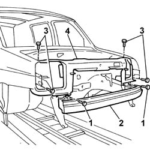
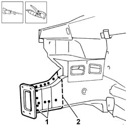
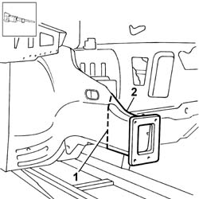
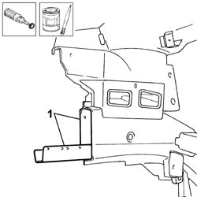
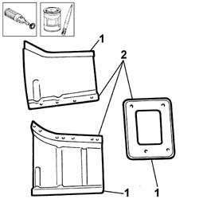
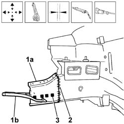
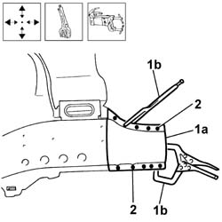
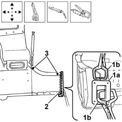

7210A40 front side panel (level 1)
- Path
- Procedures > 72 PANELS AND FRAMES > 7210 REMOVING-REFITTING > 7210A structural elements (front part) > 7210A40 front side panel (level 1)
- Kind
- repair procedure (removal / refitting; the operation number is the code)
- Applies to
- all engines; all production periods
- Interactive page
- https://sloeber94.github.io/elrnDB-fDbl/en/#/2585250
Applies to: all engines; all production periods
 Removing
Removing
 Refitting
RefittingCheck if any of the connected parts are deformed by checking body alignment dimensions. Use appropriate measurement tools (reference rigs, templates or gauges).
Straighten the body if necessary.
Remove the bonnet lids before working on damaged parts.
1. Unscrew the retaining bolts
2. Remove the front reinforcement beam.
3. Unscrew the retaining bolts
4. Remove the upper front beam.

Applies to: all engines; all production periods
1. Use a chamfering machine and drill to reduce the weld spots along the strut.
2. Use a pneumatic saw to cut along the cutting line shown in the inner area of the panel.

Applies to: all engines; all production periods
Trace an outer cutting line on the panel.
1. Use a pneumatic saw to cut along the outer panel cutting line.
2. Remove the cut edges from the body.

Applies to: all engines; all production periods
Refitting
RemovingStraighten the edges of the panel and grind them along the entire affected body surface.
1. Clean the inner reinforcement carefully and apply electrogalvanised paint along the body edges affected by the welding operation.
Straighten the panel edges if necessary.

Applies to: all engines; all production periods
1. Remove the corrosion-proof treatment from around the edges of the side panel and front reinforcement brackets using a rotary brush.
2. Apply electro-galvanized paint to the edges in contact with the body.

Applies to: all engines; all production periods
1. Correctly position the replacement inner side panel (1a) on the bodyshell and secure it using self-locking clamps (1b).
Check it is properly aligned.
2. Use a seam welder to weld along the area shown in the figure.
3. Fill weld along the area of contact with the inner reinforcement.

Applies to: all engines; all production periods
1. Correctly position the replacement outer side panel (1a) on the bodyshell and secure it using self-locking clamps (1b).
Check it is properly aligned.
2. Spot weld along the area of contact with the inner trim.

Applies to: all engines; all production periods
1. Correctly position the replacement front reinforcement (1a) on the side panel and secure it using self-locking clamps (1b).
Check the positioning is correct.
2. Use a seam welder to weld the reinforcement to the side panel trims.
3. Use a spot welder to complete the weld between the external and internal trim.

Applies to: all engines; all production periods
Check that the welded parts are correctly positioned.
Level the spot welds in the trim joint areas and inside the joint with the reinforcement using a grinding wheel.
Use a rotary brush to clean the inner parts.
Apply electro-galvanizing paint to the parts which have been ground.